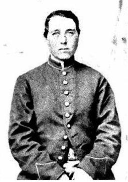
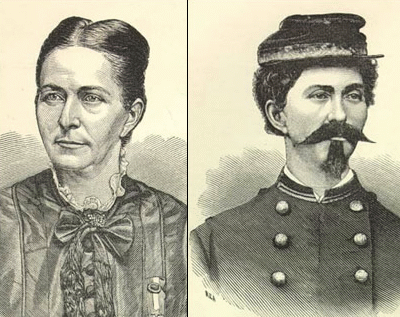

|
In the last few years, historians have become more and more
aware of what was previously thought to be a limited
phenomenon in the Civil War: the incidence of women
disguising themselves as men and enlisting in the army, for
any number of reasons.
There were numerous women openly serving with the armies
on both sides, but recognized as female; the Union forces,
more so than the Confederates, had in their ranks
vivandieres, women who marched alongside the men, often
going into battle with them, to provide medical assistance,
carry water and ammunition down the line, and to carry
messages between troops and their commanders. In addition,
|

Sarah Emma Edmonds in her Union
Army uniform
|
women such as Captain Sally Tompkins, who ran a hospital in
Richmond for the Confederacy and was rewarded with a
salaried rank in the Southern army, and Bridget Divers, who
served openly in her husband's company of the First Michigan
Cavalry, were tireless fighters in their own ways for the
aims of their nations and flags.
But as time goes by, more stories are coming to the
surface of women who left home disguised as men and passed
through the haphazard enlistment process without being
detected for what they really were. With few exceptions,
these women served gallantly for all or part of the war;
some of them, revealed to be women when they fell ill or
were wounded, were either honorably discharged or summarily
dismissed, depending on the mood of whatever general caught
them or had to deal with them. Some of them even drew
veterans' pensions in the years following the war.
Their reasons for serving were as different and varied as
the women themselves. Sarah Emma Edmonds, a young Canadian
girl, ran away from home to avoid an arranged marriage; she
impersonated a male bookseller in the United States for a
time, then enlisted in the Union army as Frank Thompson. She
served with the Second Michigan Infantry until a bout of
malaria made her fear she would be caught in her masquerade;
she deserted, but was legally cleared of that desertion long
after she had been married and had become a mother.
Jennie Hodgers, who stowed away on a ship leaving Ireland
bound for the United States in 1844, disguised herself as
one Albert D. J. Cashier and served in the Illinois
Volunteer Infantry from 1862 until the end of the war. She
was never suspected to be anything more than likeable, shy,
and very brave. Her masquerade was only discovered long
after the war, when at the age of 66 she broke her leg in an
automobile accident-and the doctor at the veteran's hospital
found her out. The secret was kept, however, and she
successfully drew the veteran's pension she was entitled to
for her gallant service.
There were others, of course, known and unknown, but one
of the women passing for men in the armed forces who seems
to have not only served well, but had a good time doing so,
was Loreta Janeta Velazquez of the Arkansas Grays, an
infantry unit she raised and equipped at her own expense.
Velazquez was the Cuban-born widow of a Confederate soldier
who died of an accidental gunshot injury early in the war;
she left her New Orleans home in search of adventure, with
the romantic notion of becoming a "second Joan of Arc." She
created a system of wire shields and braces to hide her
|

Loreta Janeta Velazquez as both
a woman and a man
|
breasts, put on a Confederate uniform, and adopted the name
Harry Buford. She then traveled to Arkansas, where she would
presumably not be recognized, and recruited for her new
command.
She was elected lieutenant, and her career as the
commander of the Grays began at First Manassas (First Bull
Run). Eventually she ended up serving with the army in
Kentucky and Tennessee, during which service she was twice
wounded and cited for gallantry. She did not seem to care
for the private behavior of men, finding that when they were
reasonably sure there were no women around, their
conversation became disgusting and full of "thoroughly
despicable" comments about women.
She wound up in Richmond, where someone figured out she
was a woman herself. Temporarily arrested as a possible spy,
she convinced Confederate authorities that she was a loyal
citizen and embarked on a career as a secret agent for the
South. Her operations took her to Canada and to the Federal
capital at Washington, D. C.Her postwar narrative account of
her adventures, amusing, harrowing, and very well written,
contains a comment that might well serve as an epitaph for
all the women, known and unknown, who chose this unique and
dangerous way to serve their country: "Notwithstanding the
fact that I was a woman, I was as good a soldier as any man
around me, and as willing as any to fight valiantly and to
the bitter end before yielding."
Source: The Civil War Society, The American Civil War: A Multicultural
Encyclopedia, Vol. II (Minden, NV: Grolier Educational Corp., 1994), 718-719.
|